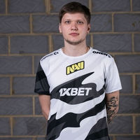

Егор Васильев является одним из самых молодых игроков российской профессиональной сцены по CS:GO. Еще в Counter-Strike: Source он выступал за такие коллективы, как PinCho, TEAM46, t44 и zNation. С переходом на CS:GO начинал свой путь в USSR Team, откуда в июле 2014 года попал в dAT Team. Под руководством именитого украинского капитана Андрея «B1ad3» Городенского раскрыл свой потенциал игрока. Несмотря на юный возраст, успел сыграть за все три топовые команды в СНГ — dAT Team, HellRaisers и Natus Vincere. В составе последних добился мирового признания и даже вошел в топ-20 лучших игроков по версии hltv.org за 2015 год.
Александр Костылев начал свою карьеру в 2013 году, играя за украинскую команду LAN DODGERS. Затем побывал в Courage Gaming, Amazing Gaming и некоторых других менее заметных коллективах. В середине сентября 2014 Александр присоединился к более серьезной команде — HellRaisers, откуда уже через пять месяцев вместе с markeloff перешел в dAT Team. Последних спустя еще месяц подписала организация FlipSid3 Tactics. Из-за внутренних проблем в июле 2015 года s1mple покинул команду и сообщил, что берет паузу и какое-то время не будет играть. Однако «отпуск» был недолгим, и через несколько дней игрок вернулся в составе команды Evolution, а затем перешел в коллектив Evolution. Dark, который просуществовал всего месяц. Поиграв еще немного в команде Worst Players, Александр стал помогать своим бывшим командам, играя стендином сначала за HellRaisers, а затем за FlipSid3 Tactics.
В январе 2016 года s1mple официально присоединился к североамериканской команде Team Liquid, с которыми попал в топ-8 на MLG Major Championship: Columbus, а на ESL One: Cologne 2016 вывел команду на второе место. Именно его игра во многом способствовала успехам коллектива. В августе 2016 года Александр вернулся на родину и подписал контракт с Natus Vincere.